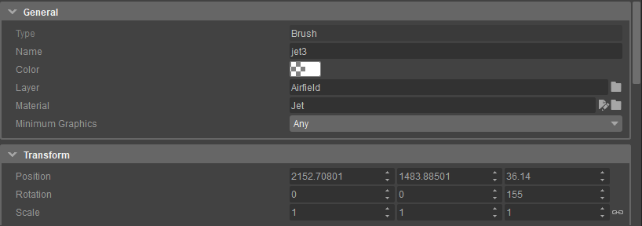

Serialization is primarily used to write serializable structures to a file, but can also be used to reflect the state of any serializable object in an editable property tree.

As we don't want anyone to spend time writing more code than they need, serialization and "inspectors" should be the primary means of enabling the user to edit a data structure and the bread and butter of all the tools in Sandbox.
However, property trees are not a silver bullet. Only use a property tree if you want pure reflection.
Any more exotic usage will result in more pain than necessary. Exotic property tree behaviors are generally frowned upon because they will throw away consistency and user expectations as most property trees work in a similar fashion. If you feel the need to modify or extend the serialization/property tree code to handle your specific case, please re-evaluate whether there is a better, more consistent UX that could be applied instead. There should be very little reasons to extend the property tree at this point.
Note: The property tree is likely to be refactored in the near future. During this refactor, complexity will be reduced, and so will the feature set. Do not create new tools depending on features of the property tree that go beyond pure reflection.